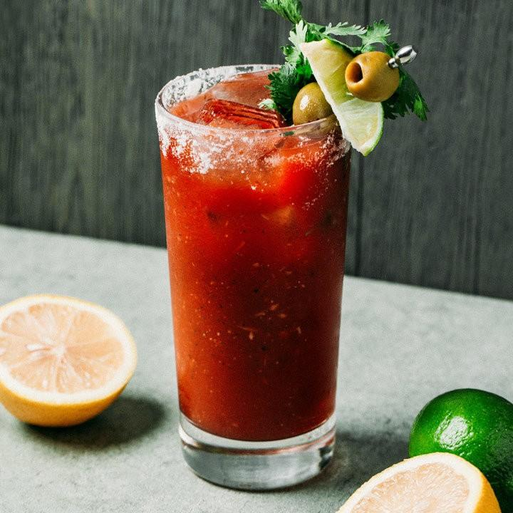
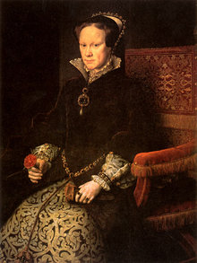
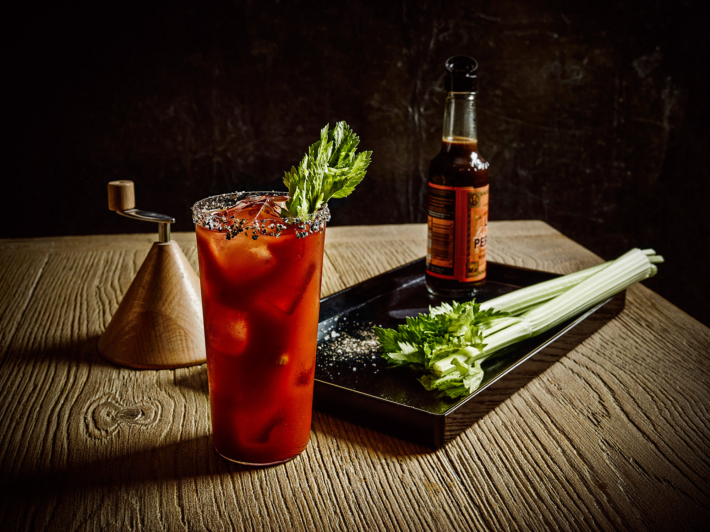
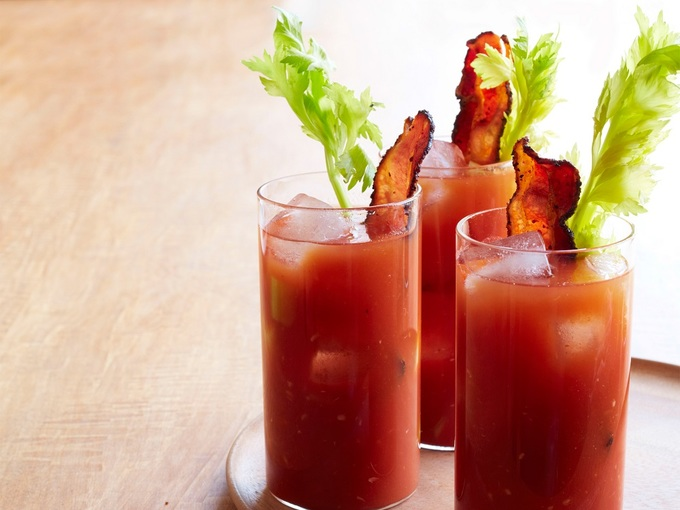

Кровавая Мери
- томатный сок – 150 грамм
- водка – 75 мл
- лимонный сок – 15 мл
- соль – 1 грамм
- перец – 1 грамм
- сельдерей – 1 веточка
- соус Тобаско – 3 капли (необязательно)
- соус Вустерс – 3 капли (необязательно)

История создания
Согласно легенде коктейль назван в честь первой английской королевы и ярой католички Марии I Тюдор (1516-1558). За жестокие расправы над протестантами она получила прозвище Кровавая Мэри (Bloody Mary). Это единственная королева за всю историю Англии, у которой нет ни одного памятника.

По еще одной версии коктейль назвал великий писатель и любитель алкоголя Эрнест Хемингуэй. Он хотел оставить в памяти поклонников имя своей четвертой жены Мэри, которая устраивала скандалы, когда Хемингуэй пьяным приходил домой.
На авторство коктейля «Кровавая Мэри» претендуют сразу два бармена – Джордж Джессел и Фернанд Петио. Джордж утверждает, что придумал этот рецепт в промежутке между мировыми войнами. Первое официальное упоминание коктейля датируется 2 декабря 1939 года в газете «New York Herald Tribune». Но там написано, что «Кровавая Мэри» готовится путем смешивания водки и томатного сока в пропорции один к одному, о других ингредиентах речь не идет.
Поэтому Фернанд Петио считает себя автором рецепта «Кровавой Мэри», так как именно он первым начал добавлять в коктейль перец, соль и соусы. Его вариант появился в 20-е годы прошлого века.
Способ приготовления
1. Налить водку в высокий стакан большого объема (хайбол).
2. Добавить соль, перец, лимонный сок и хорошо перемешать.
3. Всыпать лед.
4. Налить томатный сок, добавить соусы Тобаско и Вустерс (по желанию), еще раз перемешать.
5. Положить в стакан веточку сельдерея.
6. Подавать вместе с трубочкой.

Как пить кровавую мери
Напиток относится к группе лонгдринков – освежающих коктейлей большого объема, которые пьют через трубочку небольшими глотками. Если «Кровавая Мэри» приготовлена слоями, то стакан подают сразу с двумя трубочками, чтобы пьющий мог регулировать поступление водки и томатного сока в свой организм. Закусывают «Кровавую Мэри» сельдереем.
Еще один интересный факт – этот коктейль хорошо помогает снять похмелье и головную боль на утро после бурной вечеринки.
